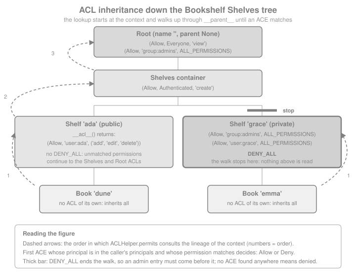

Authorization, ACLs & Permissions
|
This content was generated with the assistance of AI and should be verified against the official documentation before being relied on in production. |
This page is written against Pyramid 2.1 (the 2.1-branch documentation and the 2.1 release installed from PyPI) on
Python 3.13, checked on 2026-10-07; Pyramid 2.1 itself supports Python 3.10 and newer. Every Python example was
executed with those versions and exercised through webtest.TestApp. The running example is the Bookshelf Shelves
scenario: public and private shelves owned by users, each holding books, with a group of administrators who can do
everything except what a rule explicitly forbids.
Authentication answers "who is making this request?"; authorization answers "may that caller do this to this
object?". Pyramid 2.x splits the two cleanly. Authentication produces an identity and lives in the security policy
(the next page of the section, security policy and authentication, covers writing one in depth). Authorization is the
permits method of that same policy, which receives the request, the context resource and a permission name and
returns an Allowed or a Denied object. Pyramid ships no policy of its own, but it ships the most common
implementation of permits as a helper: ACLHelper, which reads an access control list (ACL) from the context
and, if the context has none, from its parents. This page covers both layers: the declarative part (permissions on
views, the default permission, ACLs, inheritance, route factories) and the programmatic part (imperative checks, debug
output and a permits that does not use ACLs at all). Flask has no counterpart in the core
(Flask Authorization & Roles relies on extensions such as Flask-Login for identity and on
decorators for roles), Django has a global permission table checked with user.has_perm() (see
Django: Introduction & Architecture), and FastAPI uses
dependencies (see FastAPI dependency injection); Pyramid’s distinctive
idea is that the permission is declared on the view while the rule lives on the object.
How a Permission Check Happens
The security system is optional and declarative. Nothing is protected until two things are true: a security policy
is installed, and the view that is about to run carries a permission. Before the view callable is invoked, a view
deriver wraps it in a check that calls permits(request, context, permission) on the policy. If the result is false
the wrapper raises HTTPForbidden, which the exception-view machinery turns into the forbidden view
(Errors & Exception Views covers the machinery).
Two consequences are worth stating now, because they drive most real mistakes. A view without a permission is open to everyone and the policy is not even consulted. And the permission is checked against the context that the router found, so the same view and permission can be allowed for one shelf and denied for another.
Source: Pyramid: Security
The Bookshelf Shelves Resource Tree
ACL inheritance needs a tree of location-aware resources: objects with __name__ and __parent__, as explained in
Traversal & Resources. The model below is deliberately small and
in memory (the data layer is the subject of the SQLAlchemy page). It builds a root, a shelves container, a public shelf
owned by ada with two books, and a private shelf owned by grace. Each level declares its own rules, and the rules
only mention principals and permissions; they never mention URLs or views.
from pyramid.authorization import (
ALL_PERMISSIONS,
DENY_ALL,
Allow,
Authenticated,
Deny,
Everyone,
)
class Node:
"""Location-aware: __name__ and __parent__ make ACL inheritance work."""
__name__ = ""
__parent__ = None
def __init__(self, name, parent=None):
self.__name__ = name
self.__parent__ = parent
class Container(Node):
def __init__(self, name, parent=None):
super().__init__(name, parent)
self.children = {}
def __getitem__(self, name):
return self.children[name]
def add(self, child):
child.__parent__ = self
self.children[child.__name__] = child
return child
class Book(Node):
def __init__(self, name, title, pinned=False):
super().__init__(name)
self.title = title
self.pinned = pinned
def __acl__(self):
# An empty list expresses "no opinion": the parents are consulted.
return [(Deny, Everyone, "delete")] if self.pinned else []
class Shelf(Container):
def __init__(self, name, owner, private=False):
super().__init__(name)
self.owner = owner
self.private = private
def __acl__(self):
owner = f"user:{self.owner}"
if self.private:
return [
(Allow, "group:admins", ALL_PERMISSIONS),
(Allow, owner, ALL_PERMISSIONS),
DENY_ALL,
]
return [(Allow, owner, ("add", "edit", "delete"))]
class Shelves(Container):
__acl__ = [(Allow, Authenticated, "create")]
class Root(Container):
__acl__ = [
(Allow, Everyone, "view"),
(Allow, "group:admins", ALL_PERMISSIONS),
]
def __init__(self, request=None):
super().__init__("")
shelves = self.add(Shelves("shelves"))
ada = shelves.add(Shelf("ada", "ada"))
ada.add(Book("dune", "Dune"))
ada.add(Book("emma", "Emma", pinned=True))
grace = shelves.add(Shelf("grace", "grace", private=True))
grace.add(Book("cobol", "Notes on COBOL"))
library = Root()
print(sorted(library["shelves"].children))
print(library["shelves"]["ada"]["dune"].__parent__.__name__)Root(request=None) doubles as the root factory (Pyramid calls it with the request), so each request gets a fresh
tree; a real application would load the objects from a database instead (see the data pages of this section).
A Minimal Security Policy for the Examples
Pyramid asks a security policy for four things plus permits: identity, authenticated_userid, remember and
forget. For the examples here the identity is taken from the WSGI REMOTE_USER key, which is how a front-end web
server (Apache, nginx with an auth module) can pass an already-authenticated user name to the application and which
webtest can set per request. A real application uses one of the helpers (session or auth-ticket cookie); that is the
subject of the security policy page. The authorization half is the important part: build the list of principals for
the caller and hand it to ACLHelper.permits.
from pyramid.authorization import ACLHelper
USERS = {"ada": [], "grace": [], "root": ["admins"]} # userid -> groups
def principals_for(userid):
"""Everyone, Authenticated, the user itself and each group, namespaced."""
principals = [Everyone]
if userid is not None:
principals += [Authenticated, f"user:{userid}"]
principals += [f"group:{group}" for group in USERS[userid]]
return principals
class BookshelfPolicy:
def identity(self, request):
userid = request.environ.get("REMOTE_USER")
return userid if userid in USERS else None
def authenticated_userid(self, request):
return self.identity(request)
def permits(self, request, context, permission):
principals = principals_for(self.identity(request))
return ACLHelper().permits(context, principals, permission)
def remember(self, request, userid, **kw):
return []
def forget(self, request, **kw):
return []
print(principals_for("root"))The user: and group: prefixes are a convention, not a Pyramid rule, but they matter: without them a user whose id
happens to be admins would be indistinguishable from the group of the same name (see the pitfalls below).
Everyone and Authenticated are the strings system.Everyone and system.Authenticated; they are the only
principals Pyramid itself defines.
Protecting Views with Permissions
A permission is a plain string: Pyramid does not predefine any, and "view", "edit" or "bookshelf:delete" are equally
valid. You attach one to a view with the permission argument of add_view (or of @view_config), and the same
view can be registered several times with different permissions for different contexts or request methods.
from pyramid.config import Configurator
from pyramid.httpexceptions import HTTPNotFound
from webtest import TestApp
def home(request):
return {"shelves": sorted(request.context["shelves"].children)}
def shelf_view(request):
shelf = request.context
return {"shelf": shelf.__name__, "books": sorted(shelf.children)}
def book_view(request):
return {"title": request.context.title}
def edit_shelf(request):
return {"editing": request.context.__name__}
def delete_book(request):
book = request.context
del book.__parent__.children[book.__name__]
return {"deleted": book.__name__}
def make_config(policy=None, **settings):
config = Configurator(settings=settings, root_factory=Root)
config.set_security_policy(policy or BookshelfPolicy())
config.add_view(home, context=Root, permission="view", renderer="json")
config.add_view(shelf_view, context=Shelf, permission="view", renderer="json")
config.add_view(book_view, context=Book, permission="view", renderer="json")
config.add_view(edit_shelf, context=Shelf, name="edit", permission="edit", renderer="json")
config.add_view(
delete_book,
context=Book,
name="delete",
request_method="POST",
permission="delete",
renderer="json",
)
return config
def status(app, method, path, user=None):
environ = {"REMOTE_USER": user} if user else {}
response = getattr(app, method.lower())(path, extra_environ=environ, status="*")
return response.status_int
app = TestApp(make_config().make_wsgi_app())
assert status(app, "GET", "/") == 200
assert status(app, "GET", "/shelves/ada") == 200
assert status(app, "GET", "/shelves/ada/edit") == 403 # anonymous
assert status(app, "GET", "/shelves/ada/edit", "ada") == 200 # owner
assert status(app, "GET", "/shelves/ada/edit", "grace") == 403 # somebody else
assert status(app, "GET", "/shelves/ada/edit", "root") == 200 # admins group
assert status(app, "POST", "/shelves/ada/dune/delete", "ada") == 200
print("view permissions behave as the ACLs say")The same registration with the decorator reads as below; the decorator form only takes effect when config.scan()
visits the module (see Configuration & the Configurator).
# norun
from pyramid.view import view_config
@view_config(context=Shelf, name="edit", permission="edit", renderer="json")
def edit_shelf(request):
return {"editing": request.context.__name__}Source: Pyramid: View Configuration
A denied request raises HTTPForbidden (status 403). Because the check happens after traversal and view lookup,
two different failures are distinguishable: no matching view gives 404 and a matching but forbidden view gives 403.
A permission that no ACL ever grants is not an error: it simply denies everyone who is not covered by an ALL_PERMISSIONS
entry, which is why a typo such as permission="eddit" fails closed, whereas a missing permission fails open.
| Where the permission is set | Effect |
|---|---|
|
The policy is asked |
No |
The view is public; the policy is never consulted. |
|
That one method is protected; each method of the class needs its own registration and permission. |
|
Public even when a default permission is configured (next section). |
|
Static assets are served without a permission unless you pass one; a default permission does not apply to them (see Static Assets). |
Default Permission: Secure by Default
Forgetting a permission on a single view silently opens it to the world. Pyramid offers the inverse policy:
config.set_default_permission(name) (or the default_permission argument of the Configurator) makes every view
registration that does not name a permission use the default. A registration that names its own permission keeps it,
and a registration that names NO_PERMISSION_REQUIRED opts out. Only one default can be active, and a second call
conflicts with the first.
import tempfile
from pathlib import Path
from pyramid.response import Response
from pyramid.security import NO_PERMISSION_REQUIRED
def stats(request):
return {"shelves": len(request.context["shelves"].children)}
def health(request):
return {"ok": True}
def login_page(request):
return {"login": "form goes here"}
def forbidden(request):
return Response("Not allowed.", status=403, content_type="text/plain")
def not_found(request):
return Response("No such page.", status=404, content_type="text/plain")
assets = Path(tempfile.mkdtemp())
(assets / "logo.txt").write_text("logo")
config = make_config()
config.set_default_permission("manage") # a permission only admins hold
config.add_view(stats, context=Root, name="stats", renderer="json") # inherits "manage"
config.add_view(health, context=Root, name="health", renderer="json", permission=NO_PERMISSION_REQUIRED)
config.add_view(login_page, context=Root, name="login", renderer="json") # forgotten opt-out
config.add_forbidden_view(forbidden) # these two directives never use a permission
config.add_notfound_view(not_found)
config.add_static_view("assets", str(assets)) # permissive unless permission= is given
secure_app = TestApp(config.make_wsgi_app())
assert status(secure_app, "GET", "/stats") == 403 # anonymous
assert status(secure_app, "GET", "/stats", "ada") == 403 # authenticated but not an admin
assert status(secure_app, "GET", "/stats", "root") == 200 # group:admins holds ALL_PERMISSIONS
assert status(secure_app, "GET", "/health") == 200 # explicit opt-out
assert status(secure_app, "GET", "/login") == 403 # the classic mistake: nobody can reach the login view
assert status(secure_app, "GET", "/shelves/ada") == 200 # explicit "view" is kept
assert secure_app.get("/nowhere", status=404).text == "No such page."
assert status(secure_app, "GET", "/assets/logo.txt") == 200
print("default permission applied, opt-outs honoured")The default applies to every add_view / @view_config registration that names no permission, wherever in the
configuration the call to set_default_permission is placed (it is resolved in the first configuration phase). The
official documentation warns that even exception views are then protected. In the 2.1 code that warning applies to
views you register yourself with add_view; the dedicated directives add_forbidden_view, add_notfound_view
and add_exception_view register their views with NO_PERMISSION_REQUIRED and raise a ConfigurationError if you
pass a permission to them, and add_static_view is permissive unless you give it a permission. What a default
permission does break is a login page, a registration page, a health check or a JSON "who am I" endpoint registered
with add_view: as the example shows, an anonymous visitor then gets 403 on the login page. Mark each of them
with NO_PERMISSION_REQUIRED. A default permission is the recommended starting point for any application with a
login; the permission that public pages need (here "view") is then requested explicitly.
Writing ACLs
An ACL is an ordered sequence of access control entries (ACEs). Each ACE is a three-element tuple: an action, a principal and a permission.
| Element | Meaning |
|---|---|
Action |
|
Principal |
A string that identifies a user or a group, such as |
Permission |
One permission name, or a sequence of names ( |
The special names live in pyramid.authorization:
| Name | Value | Meaning |
|---|---|---|
|
|
Every caller, authenticated or not. It is part of the principal list your policy builds; nothing adds it
automatically for you inside |
|
|
Any caller your policy treats as logged in. |
|
an |
Stands for every permission: its |
|
|
A ready-made ACE, normally the last entry of an ACL, that stops the inheritance walk. |
from pyramid.authorization import ACLHelper
helper = ACLHelper()
shelf = library["shelves"]["ada"]
print(repr(Everyone), repr(Authenticated), repr(Allow), repr(Deny))
print(DENY_ALL[0], DENY_ALL[1], type(DENY_ALL[2]).__name__)
# A sequence of permissions is one ACE; "delete" is in it, "create" is not.
ace = (Allow, "user:ada", ("add", "edit", "delete"))
assert helper.permits(shelf, ["user:ada"], "delete")
assert not helper.permits(shelf, ["user:ada"], "create")
print(helper.permits(shelf, ["user:ada"], "edit").msg[:48])Source: Security: Elements of an ACL and pyramid.authorization
ACLHelper.permits(context, principals, permission) returns an ACLAllowed or an ACLDenied. Both evaluate to true
and false respectively, and both carry a msg attribute (and ace, acl, permission, principals and context)
that says which entry decided. Prefer Everyone and Authenticated from pyramid.authorization; the same names in
pyramid.security are deprecated aliases kept from Pyramid 1.x.
First Match Wins
An ACL is a program, not a set: the helper reads the entries in order and the first ACE whose principal is among the
caller’s principals and whose permission matches decides the outcome, Allow or Deny. Entries after it are never
read. The same two entries therefore mean opposite things in opposite orders:
class Probe:
__parent__ = None
__name__ = ""
def __init__(self, acl):
self.__acl__ = acl
allow_first = Probe([(Allow, Everyone, "view"), (Deny, Everyone, "view")])
deny_first = Probe([(Deny, Everyone, "view"), (Allow, Everyone, "view")])
assert helper.permits(allow_first, [Everyone], "view")
assert not helper.permits(deny_first, [Everyone], "view")
# The principals list is order-insensitive, but each ACE is tested in ACL order:
# the broad Deny for Authenticated wins over the later, narrower Allow for ada.
mixed = Probe([(Deny, Authenticated, "edit"), (Allow, "user:ada", "edit")])
assert not helper.permits(mixed, principals_for("ada"), "edit")
print("first match wins")Source: Security: Elements of an ACL
Two idioms follow. Put the narrow, specific entries first and the broad ones last. And end an ACL that must be final
with DENY_ALL, because the default result for "no entry matched anywhere" is ACLDenied but the walk would otherwise
continue to the parents, which may grant the permission.
Inheritance Through __parent__
When the context has no ACL, or has one that neither allows nor denies the permission, the helper moves to the
context’s parent, then to the parent’s parent, up to the root. That walk is the lineage of the context
(pyramid.location.lineage). It needs location awareness: every object has __parent__ (and __name__), the root’s
parent being None. An object without __parent__ ends the lineage, which silently turns "inherit from the root"
into "no rules at all".

The model above uses all three possibilities. A book on ada’s public shelf has no entries of its own, so view comes
from the root’s Allow Everyone, and edit from the shelf’s owner entry. The pinned book emma adds one Deny, which
stops even the administrators from deleting it. grace’s private shelf is cut off from the root’s Allow Everyone
entry by DENY_ALL, and so its ACL names group:admins itself, before the DENY_ALL.
ada = library["shelves"]["ada"]
dune, emma = ada["dune"], ada["emma"]
grace_shelf = library["shelves"]["grace"]
cobol = grace_shelf["cobol"]
# Book without ACL inherits from shelf, container and root.
assert helper.permits(dune, principals_for(None), "view") # root: Everyone view
assert helper.permits(dune, principals_for("ada"), "edit") # shelf: owner
assert not helper.permits(dune, principals_for("grace"), "edit")
assert helper.permits(dune, principals_for("root"), "delete") # root: admins
# A Deny on the book beats the root's admin Allow (the book is read first).
assert not helper.permits(emma, principals_for("root"), "delete")
assert not helper.permits(emma, principals_for("ada"), "delete")
# DENY_ALL on grace's shelf hides the root's Allow Everyone view.
assert not helper.permits(cobol, principals_for(None), "view")
assert not helper.permits(cobol, principals_for("ada"), "view")
assert helper.permits(cobol, principals_for("grace"), "view")
assert helper.permits(cobol, principals_for("root"), "view") # named before DENY_ALL
# The Shelves container grants "create" to Authenticated, below the root.
assert helper.permits(grace_shelf.__parent__, principals_for("ada"), "create")
assert not helper.permits(grace_shelf.__parent__, principals_for(None), "create")
print("inheritance and DENY_ALL verified")Callable ACLs, and Why Not Properties
An __acl__ may be a list or a callable that returns one. A callable is invoked without arguments each time the
helper reads it, so it can look at the instance (the Shelf ACL above uses self.owner and self.private). It
may return an empty list to say "no opinion". Writing __acl__ as a Python property is discouraged by the
official documentation: if the getter raises AttributeError, Python’s getattr machinery swallows it and the helper
simply sees "no ACL", which grants nothing and so hides the bug. Use a method.
class Report:
__parent__ = None
__name__ = ""
def __init__(self, owner):
self.owner = owner
@property
def __acl__(self): # discouraged: the typo below is silently swallowed
return [(Allow, self.owner_id, "view")] # AttributeError
report = Report("ada")
assert getattr(report, "__acl__", None) is None # the helper behaves the same way
assert not helper.permits(report, [Everyone], "view")
print("property ACL: the error disappeared, access was denied")Who Holds a Permission
ACLHelper.principals_allowed_by_permission(context, permission) walks the lineage from the root down to the context
and returns the set of principals that are allowed: an Allow adds a principal, a later Deny for the same principal
removes it, and a Deny for Everyone clears everything granted above it. It is useful for notifications ("who can
edit this shelf?") and for audit scripts, but it only understands ACLs: a permits that decides in code is invisible
to it.
print(sorted(helper.principals_allowed_by_permission(ada, "edit")))
print(sorted(helper.principals_allowed_by_permission(grace_shelf, "view")))The module-level function pyramid.security.principals_allowed_by_permission is the legacy form; it works only with
the legacy authorization policy interface and not with a security policy.
Per-Object ACLs: Traversal and Route Factories
The ACL always belongs to the context, so the real question is how the context is produced. Under traversal the
URL walks the tree and the object where the walk ends is the context; the examples above work that way, with
Root as root_factory. Under URL dispatch there is no tree by default and the context is a bare default root object with no ACL, so
nothing is ever allowed by an ACL: the route’s factory decides the context. A route factory is any callable that receives the request and returns the context
(a class whose constructor takes the request works too); request.matchdict is already filled in. Returning a
location-aware object from the tree gives the same inheritance as traversal.
from pyramid.security import Allowed
def shelf_factory(request):
try:
return library["shelves"][request.matchdict["shelf"]]
except KeyError:
raise HTTPNotFound()
def api_shelf(request):
shelf = request.context
return {"shelf": shelf.__name__, "owner": shelf.owner, "books": sorted(shelf.children)}
def api_add_book(request):
shelf = request.context
name = request.json_body["name"]
shelf.add(Book(name, request.json_body["title"]))
return {"added": name}
config = Configurator(settings={}, root_factory=Root)
config.set_security_policy(BookshelfPolicy())
config.add_route("api_shelf", "/api/shelves/{shelf}", factory=shelf_factory)
config.add_view(api_shelf, route_name="api_shelf", request_method="GET", permission="view", renderer="json")
config.add_view(api_add_book, route_name="api_shelf", request_method="POST", permission="add", renderer="json")
api = TestApp(config.make_wsgi_app())
def api_status(method, path, user=None, **kw):
environ = {"REMOTE_USER": user} if user else {}
call = getattr(api, method.lower())
return call(path, extra_environ=environ, status="*", **kw).status_int
assert api_status("GET", "/api/shelves/ada") == 200 # Everyone view, from the root ACL
assert api_status("GET", "/api/shelves/grace") == 403 # DENY_ALL on the private shelf
assert api_status("GET", "/api/shelves/grace", "grace") == 200
assert api_status("GET", "/api/shelves/nowhere") == 404 # the factory raised HTTPNotFound
body = {"name": "ulysses", "title": "Ulysses"}
assert api_status("POST", "/api/shelves/ada", params=body, content_type="application/json") == 403
assert api_status("POST", "/api/shelves/ada", "grace", params=__import__("json").dumps(body), content_type="application/json") == 403
assert api_status("POST", "/api/shelves/ada", "ada", params=__import__("json").dumps(body), content_type="application/json") == 200
print(sorted(library["shelves"]["ada"].children))Source: URL Dispatch: Route Factories
The factory runs before the permission check, so a missing object produces 404 for everybody, including anonymous callers, while an existing private object produces 403. If the mere existence of a private shelf is itself information, make the factory answer 404 for shelves the caller may not see, or have the forbidden view answer 404 for those routes. The route-factory mechanism in general, including the basic ACL setup for URL dispatch, is covered by URL Dispatch.
A route factory can also return an object that is not part of any tree. Such a context has only its own ACL
(nothing is inherited, because it has no __parent__), which is often exactly right for one-off resources such as
a user’s own profile.
class Profile:
"""Standalone, per-request context: no parent, therefore no inheritance."""
def __init__(self, request):
self.userid = request.environ.get("REMOTE_USER")
@property
def __acl__(self): # fine here: no attribute lookup can fail
return [(Allow, f"user:{self.userid}", ("view", "edit")), DENY_ALL]
config = Configurator(root_factory=Root)
config.set_security_policy(BookshelfPolicy())
config.add_route("profile", "/profile", factory=Profile)
config.add_view(lambda request: {"user": request.context.userid}, route_name="profile", permission="view", renderer="json")
profile_app = TestApp(config.make_wsgi_app())
assert profile_app.get("/profile", status="*").status_int == 403 # anonymous: "user:None" is not a principal
assert profile_app.get("/profile", extra_environ={"REMOTE_USER": "ada"}).json == {"user": "ada"}
print("standalone contexts work, with their own ACL only")Source: URL Dispatch: Route Factories
Because Pyramid also supports hybrid applications, a route can combine both: a route registered with a
factory and a traverse pattern such as /{shelf} runs the route first, then traverses from the factory’s root
with the given path, and the context found by traversal supplies the ACL (see Traversal & Resources,
the hybrid section).
Imperative Checks in Code and Templates
Declarative permissions protect whole views. Sometimes a view needs a finer decision: show or hide an edit button,
or return a shelf’s data with extra fields for an owner. request.has_permission(permission, context=None) asks the
installed policy the same question for the current context (or for the context you pass). The result is
the same Allowed/Denied (or ACLAllowed/ACLDenied) object as before: usable as a boolean, and with a msg that says
why. pyramid.security.view_execution_permitted(context, request, name="") goes one step further and answers
"would the view called name run for this context?", using the permission that is registered on that view; it raises
TypeError if no registered view matches.
from pyramid.security import view_execution_permitted
def shelf_summary(request):
shelf = request.context
can_edit = request.has_permission("edit")
return {
"shelf": shelf.__name__,
"can_edit": bool(can_edit),
"can_delete_dune": bool(request.has_permission("delete", shelf.children.get("dune", shelf))),
"edit_view_would_run": bool(view_execution_permitted(shelf, request, "edit")),
"reason": can_edit.msg.split(" via ")[0],
}
config = make_config()
config.add_view(shelf_summary, context=Shelf, name="summary", permission="view", renderer="json")
summary_app = TestApp(config.make_wsgi_app())
anonymous = summary_app.get("/shelves/ada/summary").json
owner = summary_app.get("/shelves/ada/summary", extra_environ={"REMOTE_USER": "ada"}).json
assert anonymous["can_edit"] is False and owner["can_edit"] is True
assert owner["can_delete_dune"] is True and owner["edit_view_would_run"] is True
print(anonymous["reason"], "|", owner["reason"])In a Jinja2 or Chameleon template the same call hides controls that the caller could not use anyway. This is a convenience for the user interface only: the corresponding views must still carry their own permission, because a hidden button does not stop a hand-written request (see Templates).
{% if request.has_permission("edit") %}
<a href="{{ request.resource_url(context, 'edit') }}">Edit this shelf</a>
{% endif %}Source: Pyramid: Templates
The Forbidden View
When a permission check fails, Pyramid raises HTTPForbidden. Out of the box the response is a plain 403 page. The
add_forbidden_view directive (or @forbidden_view_config) registers your own view for that exception: the usual
pattern is to send anonymous callers to a login page, and to show a real 403 to callers who are signed in but not
allowed.
from urllib.parse import urlencode
from pyramid.httpexceptions import HTTPSeeOther
def forbidden_or_login(request):
if request.authenticated_userid is None:
query = urlencode({"next": request.path})
return HTTPSeeOther(location=f"{request.application_url}/login?{query}")
return Response("You are signed in but not allowed to do that.", status=403, content_type="text/plain")
config = make_config()
config.add_forbidden_view(forbidden_or_login)
login_app = TestApp(config.make_wsgi_app())
redirect = login_app.get("/shelves/ada/edit", status=303)
print(redirect.headers["Location"])
denied = login_app.get("/shelves/ada/edit", extra_environ={"REMOTE_USER": "grace"}, status=403)
print(denied.text)The login view must never redirect to an arbitrary next value (an open redirect); accept only paths on your own
site. Do not answer unauthorized POST requests with a redirect that drops the body without telling the client what
happened. API clients prefer a 401 or 403 with a JSON body, so register a forbidden view per route (route_name) or
use accept and request_method predicates in the same way as for any other view.
Debugging Authorization
When a view is allowed or denied unexpectedly, turn on authorization debugging. The setting is debug_authorization
(pyramid.debug_authorization = true in the .ini file, or the PYRAMID_DEBUG_AUTHORIZATION=1 environment
variable): every check made during view rendering is logged, naming the ACE and the ACL that decided, and the body of a
403 response contains the same text. It is a development tool and should never be enabled in production, because the
response body would disclose the ACLs and the principals of the caller. The settings table of the
settings page lists every debug flag.
import logging
records = []
class Capture(logging.Handler):
def emit(self, record):
records.append(record.getMessage())
logging.getLogger().addHandler(Capture())
logging.getLogger().setLevel(logging.DEBUG)
debug_app = TestApp(make_config(**{"pyramid.debug_authorization": "true"}).make_wsgi_app())
response = debug_app.get("/shelves/ada/edit", status=403)
assert "debug_authorization of url" in response.text
assert any("ACLDenied" in line for line in records)
print(response.text.strip().splitlines()[-1][:150])For imperative checks (has_permission) there is no debug flag; print or log the msg of the returned object as
the earlier example does. A message such as ACLDenied permission "edit" via ACE "<default deny>" means that no entry
matched anywhere in the lineage (the usual cause is a principal your policy did not generate, such as a missing
group: prefix), whereas a message naming an ACE tells you exactly which entry blocked the request.
Authorization Without ACLs
ACLs are one way to implement permits, not the only one. The method receives the request, the context and the
permission; it can use the identity directly, call a service, or consult a role table. A policy that answers
Allowed or Denied with a message is fully equivalent from the point of view of views, the forbidden view,
has_permission and debug logging (only principals_allowed_by_permission has no meaning). Rules that depend on
runtime state ("the owner may edit until the book is lent out", "editors only during business hours") are easier to
write as code than as an ACL.
The policy below grants permissions by role, adds an ownership rule, and returns reasons. The owner is found by walking the lineage, so it works for a shelf or any book on it.
from pyramid.location import lineage
from pyramid.security import Allowed, Denied
ROLES = {
"ada": "editor",
"grace": "reader",
"root": "admin",
}
ROLE_PERMISSIONS = {
"reader": {"view"},
"editor": {"view", "add", "edit"},
"admin": {"view", "add", "edit", "delete", "create"},
}
class RolePolicy(BookshelfPolicy):
def permits(self, request, context, permission):
if permission == "view":
return Allowed("Everybody may view")
userid = self.identity(request)
if userid is None:
return Denied("Anonymous callers may only view")
owner = next((o.owner for o in lineage(context) if hasattr(o, "owner")), None)
if owner == userid:
return Allowed("%s owns the shelf", userid)
if permission in ROLE_PERMISSIONS[ROLES[userid]]:
return Allowed("%s may %s as %s", userid, permission, ROLES[userid])
return Denied("%s may not %s as %s", userid, permission, ROLES[userid])
config = make_config(RolePolicy()) # instead of the ACL-based policy
role_app = TestApp(config.make_wsgi_app())
assert status(role_app, "GET", "/shelves/grace") == 200 # no private-shelf rule in this policy
assert status(role_app, "GET", "/shelves/ada/edit", "ada") == 200 # owner
assert status(role_app, "GET", "/shelves/grace/edit", "ada") == 200 # editor role
assert status(role_app, "GET", "/shelves/ada/edit", "grace") == 403 # reader role
assert status(role_app, "POST", "/shelves/ada/dune/delete", "ada") == 200 # owner of the lineage
assert status(role_app, "POST", "/shelves/ada/dune/delete", "root") == 200 # admin role
print("role and ownership rules in a custom permits")Allowed and Denied live in pyramid.security. Their constructor takes a format string plus arguments, and the
formatted text becomes msg. Pass user-controlled strings as arguments rather than concatenating them into the format
string.
A pragmatic split is to keep the coarse rules in ACLs, where they are visible and testable as data, and to put only the
exceptional dynamic rules in permits before delegating to ACLHelper: for example, return Denied early when the
account is suspended, and otherwise return ACLHelper().permits(...).
Legacy Authentication and Authorization Policies
Before Pyramid 2.0 two objects cooperated: an authentication policy (AuthTktAuthenticationPolicy,
SessionAuthenticationPolicy, BasicAuthAuthenticationPolicy, RemoteUserAuthenticationPolicy) that produced the
user id and a list of effective principals through a callback, and an authorization policy
(ACLAuthorizationPolicy) that matched those principals against ACLs. They are installed with
set_authentication_policy and set_authorization_policy. In 2.x they are deprecated but still work; the 2.0
documentation says support may be removed in a later release, and the what’s-new page promises that the ACL features
themselves are not going away, only moving to pyramid.authorization.
| Legacy (1.x style, deprecated) | Pyramid 2.x equivalent |
|---|---|
|
One |
|
Your |
|
Your own lookup of groups from the identity, inside |
|
|
|
|
|
Deprecated; use a permission, or a custom predicate that calls |
|
The same names imported from |
|
|
import secrets
import warnings
from pyramid.authentication import AuthTktAuthenticationPolicy
from pyramid.authorization import ACLAuthorizationPolicy
with warnings.catch_warnings(record=True) as caught:
warnings.simplefilter("always")
legacy = Configurator()
legacy.set_authentication_policy(AuthTktAuthenticationPolicy(secrets.token_hex(32)))
legacy.set_authorization_policy(ACLAuthorizationPolicy())
legacy.commit()
print(sorted({w.category.__name__ for w in caught}))
assert any(issubclass(w.category, DeprecationWarning) for w in caught)Do not mix the two systems in a new application. Old articles and books describing ACLAuthorizationPolicy and
groupfinder callbacks still show a working ACL model, but the code needs to be rewritten as above.
Testing Authorization
Authorization rules are data plus a small function, so they test well at three levels. ACL tests call ACLHelper
directly with a principal list and need no WSGI at all (as most examples on this page do). Policy tests construct
the policy and call permits with a fake request. Integration tests drive the whole application with
webtest.TestApp and assert on status codes, which is the only level that also proves the view carries the
permission you meant.
from pyramid.testing import DummyRequest
def test_policy_denies_anonymous_edit():
request = DummyRequest(environ={})
result = BookshelfPolicy().permits(request, library["shelves"]["ada"], "edit")
assert not result and "ACLDenied" in result.msg
def test_policy_allows_owner_edit():
request = DummyRequest(environ={"REMOTE_USER": "ada"})
assert BookshelfPolicy().permits(request, library["shelves"]["ada"], "edit")
def views_relying_on_the_default(wsgi_app):
"""Names of the views registered without an explicit permission."""
introspector = wsgi_app.registry.introspector
explicit = {
related.discriminator
for item in introspector.get_category("permissions")
for related in item["related"]
}
return sorted(
item["introspectable"]["name"]
for item in introspector.get_category("views")
if item["introspectable"].discriminator not in explicit
and item["introspectable"]["callable"].__name__ != "default_exceptionresponse_view"
)
def test_unprotected_views_are_the_expected_ones():
# Review list: a new name appearing here is a new view without a permission.
assert views_relying_on_the_default(secure_app.app) == ["login", "stats"]
test_policy_denies_anonymous_edit()
test_policy_allows_owner_edit()
test_unprotected_views_are_the_expected_ones()
print("authorization tests pass")The last test uses the introspector (see Configuration & the Configurator)
to list the views registered without an explicit permission. With a default permission configured those are the
views that rely on it (stats, and login, which the earlier example forgot to opt out); without a default they are
the public views. Either way it is a short review list that a test can pin, so a new unprotected view cannot appear
unnoticed.
Pitfalls and Security
-
Fail open by default. A view without
permissionis public and the policy is not asked. Configure a default permission and opt out withNO_PERMISSION_REQUIRED. -
Protecting the route, not the object. A permission on a collection view does not protect
/shelves/{id}. Check the permission against the object the user is addressing (the context), or you create an insecure direct object reference, the classic broken-access-control bug. -
Hiding is not protecting. Removing a link in a template does not secure the view behind it.
-
Principal naming collisions. If user ids and group names share a namespace, a user called
adminsis an administrator. Namespace principals (user:,group:) and never build principals from unvalidated request data. -
DENY_ALLstops the walk. Entries inherited from above the ACL carrying it are never read; list the administrators before it, as the private shelf does. -
Broken location awareness. A resource without
__parent__silently stops inheritance. Test thatlineage(resource)ends at the root. -
Mutable class-level ACLs. A list stored as a class attribute is shared by all instances; mutating it for one object changes all of them. Build the list in a method for per-instance rules.
-
Properties for
__acl__. Errors are swallowed and the access is denied silently (see above). -
Existence leaks. Route factories answer 404 before the permission check can answer 403; decide deliberately which to show.
-
Authorization is not CSRF protection. A permission says who may act, not that the user meant to; unsafe requests still need CSRF defences (the CSRF page of this section).
-
Do not log secrets.
debug_authorizationoutput includes principals and ACLs; keep it off in production. -
Test the denials. A test suite that only checks the allowed paths cannot detect a view that became public.
OWASP lists broken access control first in its Top 10 and keeps an Authorization Cheat Sheet with the same advice: deny by default, enforce on the server for every request, and test the negative cases.
Compared With Other Frameworks
| Framework | Closest equivalent and the difference |
|---|---|
Flask |
Decorators such as |
Django |
|
Tornado |
|
FastAPI |
|
Zope and Plone |
The origin of the ACL-and-lineage model; Pyramid keeps the ideas without the framework. |
Recent Changes and Outdated Material
-
Pyramid 2.0 replaced the authentication/authorization policy pair with a single security policy and moved
Everyone,Authenticated,Allow,Deny,ALL_PERMISSIONS,DENY_ALL,ACLAllowedandACLDeniedfrompyramid.securitytopyramid.authorization.ACLAuthorizationPolicybecameACLHelper; the principal concept was removed from the request API, andrequest.identitywas added. Pyramid 2.1 keeps this design. -
The 1.x "groupfinder callback" idiom and
request.effective_principalsbelong to the legacy API: they still run, with aDeprecationWarning, but new code derives principals insidepermits. -
EveryoneandAuthenticatedinpyramid.security, andprincipals_allowed_by_permissionas a module function, are deprecated; import frompyramid.authorizationand use the helper method. -
Older tutorials and the wiki and blog sample applications of the 1.x documentation still use
groupfinder,ACLAuthorizationPolicyandeffective_principals. The concepts (ACL, inheritance, forbidden view) are unchanged; the wiring is not. -
Pyramid 2.1 is synchronous WSGI:
permitsruns in the worker thread, so a database lookup there blocks only that thread; cache the identity (and its groups) on the request rather than reading it on every check.
Summary
-
A permission is a string on a view; the policy’s
permits(request, context, permission)decides, returningAllowedorDenied. No permission means no check. -
Set a default permission and mark truly public views, forbidden and not-found views, login and health checks with
NO_PERMISSION_REQUIRED. -
An ACL is an ordered list of
(Allow|Deny, principal, permission or sequence); the first matching entry wins;Everyone,Authenticated,ALL_PERMISSIONSandDENY_ALLare inpyramid.authorization. -
With
ACLHelper.permitsthe context’s ACL is consulted first and then its parents through__parent__; no match anywhere means denied;DENY_ALLstops the walk. -
Traversal produces the context from the URL; under URL dispatch a route
factorydoes, and it should return location-aware objects to inherit. -
request.has_permissionandview_execution_permittedare the imperative counterparts;debug_authorizationshows which ACE decided;permitscan also ignore ACLs entirely. -
The 1.x authentication and authorization policies are deprecated legacy; write a security policy.